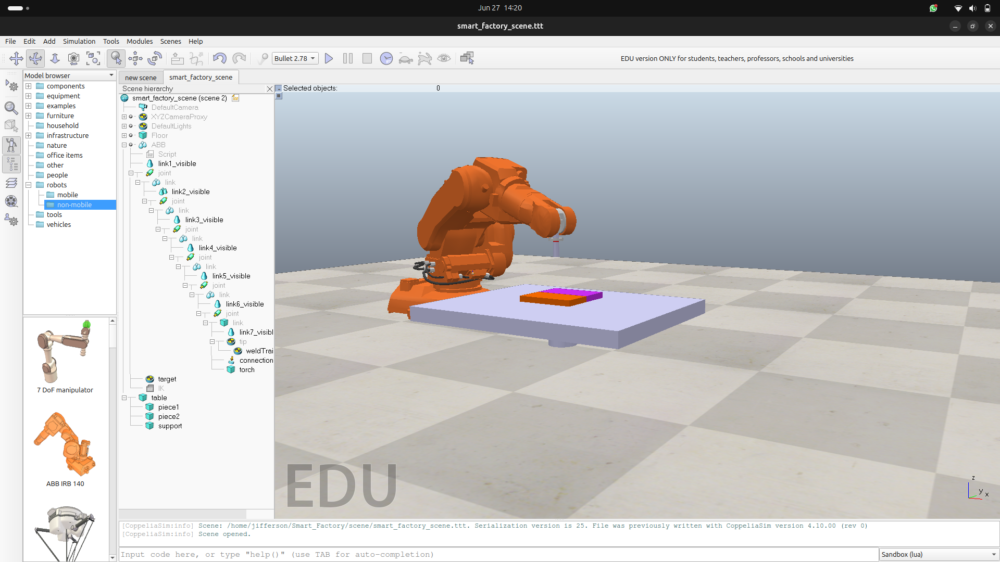
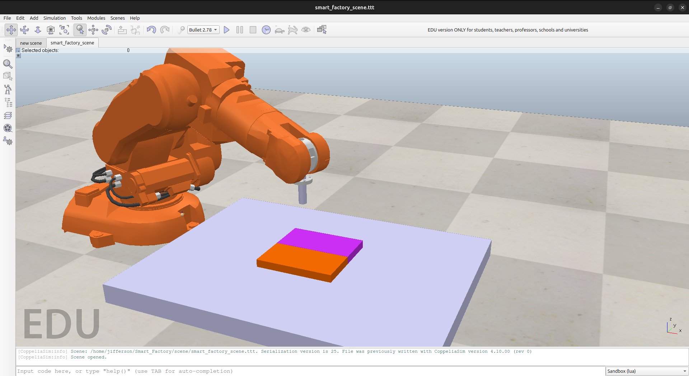
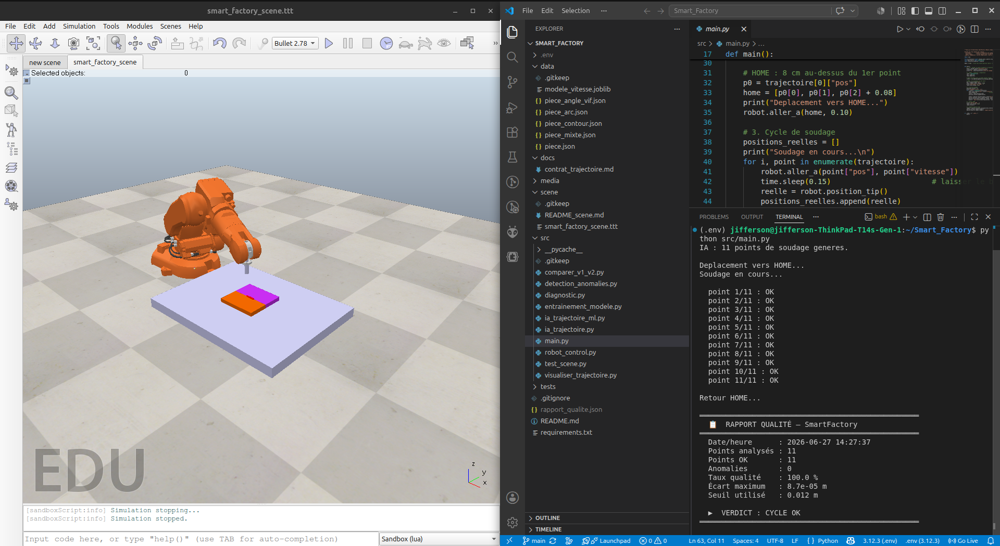

First things first: what is robot simulation?
A robot simulator is a software environment that recreates a robot and its surroundings with enough physical accuracy to test your real control logic. This is different from 3D animation. Animation replays predefined motion. Simulation reacts to commands, collisions, trajectories, and timing constraints.
In practice, simulation lets you test motion planning, inverse kinematics, scene setup, and quality checks before touching expensive hardware.
Why simulation changes how you learn robotics
- Safety: dangerous trajectories can be tested without risking hardware or people.
- Cost: most expensive mistakes happen in software, not on physical equipment.
- Speed: your iterate-debug-run cycle is much faster than full hardware resets.
- Repeatability: same initial conditions help isolate software issues quickly.
- Accessibility: you can build strong robotics skills from a laptop.
Simulation is your starting point, not your finish line. The goal is to remove most uncertainty before final tuning on real hardware.
The tool I use: CoppeliaSim
For this project, we used CoppeliaSim with the ZMQ Remote API for Python. It gives access to real robot models, integrated inverse kinematics workflows, and practical scene management.
The Python client is straightforward:
pip install coppeliasim-zmqremoteapi-clientfrom coppeliasim_zmqremoteapi_client import RemoteAPIClient
client = RemoteAPIClient()
sim = client.require('sim')
robot = sim.getObject('/your_robot_name')
print('Connected! Handle:', robot)SmartFactory: our robotic welding cell project
For a certification project at EIC from Harts Community, our team ARCMIND ROBOTICS built SmartFactory: a simulated robotic welding cell. The robot follows a seam between two pieces, checks point-level accuracy, traces a visible weld path, and generates a quality report at the end of each cycle.
Team modules were developed in parallel using a shared data contract:
- Angie: AI trajectory generation from piece geometry.
- Louis: Python controller for arm movement and command flow.
- Raphaella: quality checker and cycle report logic.
- Me: simulation scene design and object structure in CoppeliaSim.

Scene structure and object naming
Clean scene naming made integration faster. Our Python modules referenced deterministic object paths, which reduced debugging friction across teammates.
robot = sim.getObject('/ABB')
tip = sim.getObject('/ABB/tip')
target = sim.getObject('/ABB/target')
table = sim.getObject('/table')
piece1 = sim.getObject('/piece1')
piece2 = sim.getObject('/piece2')
Results from a full simulated cycle
After integrating all modules, the cycle validated 11 weld points with no anomalies.

Generated quality report:
{
"timestamp": "2026-06-21 11:40:54",
"total_points": 11,
"points_ok": 11,
"anomalies": 0,
"taux_qualite_pct": 100.0,
"ecart_max_m": 2.6e-05,
"seuil_m": 0.012,
"verdict": "CYCLE OK"
}Key outcome summary:
- 11 weld points verified.
- 0 anomalies detected.
- 100% quality score.
- Maximum error around 0.026 mm under a 12 mm threshold.
Project repository: https://github.com/dellyjifferson/Smart_Factory
What this taught me
- Name objects consistently from day one.
- Use inverse kinematics as a productivity multiplier.
- Define data contracts early for parallel team execution.
- Use simulation metrics to quantify quality and precision.
- Treat sim-to-real as an expected gap to tune, not a blocker.
Simulation is not about avoiding real hardware. It is about arriving to real hardware with better logic, fewer surprises, and higher confidence. SmartFactory showed us that a small focused team can produce industrial-style workflow quality in a virtual environment, then carry those practices forward.